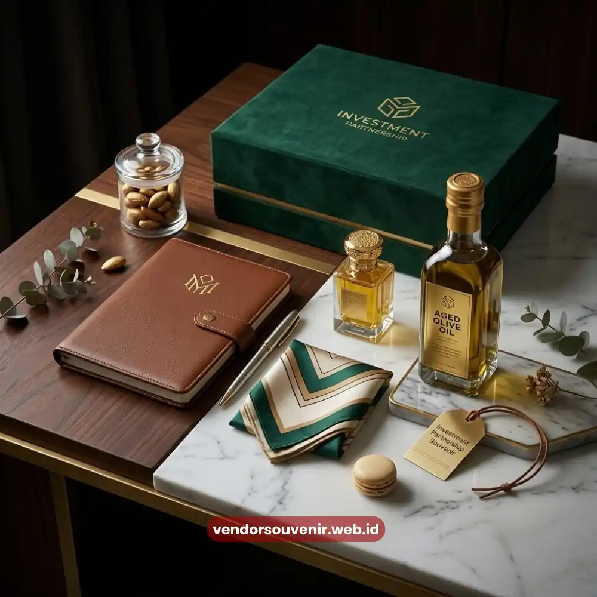
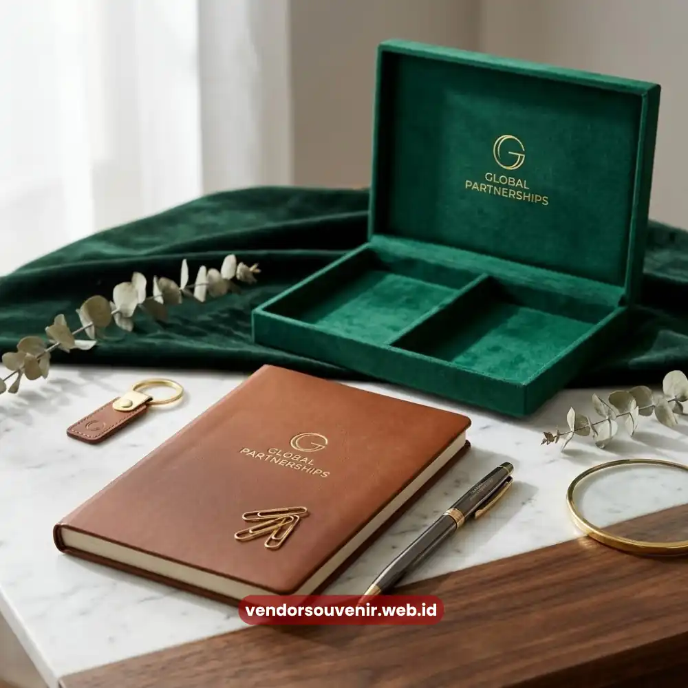

Daftar Isi
Souvenir kantor elegan untuk mitra bisnis adalah cinderamata korporat bernuansa profesional yang diberikan untuk mempererat hubungan kerja sama, biasanya berupa produk fungsional dengan finishing premium seperti kulit sintetis, kayu, atau logam.
Souvenir jenis ini penting karena menjadi simbol penghargaan sekaligus media branding jangka panjang bagi mitra yang menerimanya. Pemilihan souvenir yang tepat dapat memperkuat kesan profesional perusahaan di mata relasi bisnis.
- Souvenir elegan mencerminkan keseriusan perusahaan dalam menjaga relasi bisnis.
- Bahan premium seperti kulit dan kayu memberi kesan eksklusif.
- Souvenir berfungsi sebagai media branding pasif jangka panjang.
- Tema souvenir sebaiknya disesuaikan dengan karakter mitra dan momen pemberian.
- Vendor Souvenir menyediakan pilihan set elegan siap custom logo.
Apa yang Membuat Souvenir Kantor Terlihat Elegan?
Kesan elegan pada souvenir kantor umumnya berasal dari kombinasi tiga faktor, yaitu pemilihan material, kualitas finishing, dan kesederhanaan desain. Material seperti kulit sintetis premium, kayu solid, atau logam memberi kesan lebih mewah dibanding plastik biasa. Finishing yang rapi, seperti jahitan presisi pada pouch atau permukaan halus pada produk kayu, turut menentukan persepsi kualitas produk secara keseluruhan.
Desain yang sederhana namun rapi juga berperan penting. Souvenir dengan terlalu banyak elemen visual justru dapat menurunkan kesan profesional, sementara desain minimalis dengan penempatan logo yang proporsional cenderung lebih disukai kalangan korporat.

Detail Souvenir Kantor Elegan
Mengapa Souvenir Elegan Penting untuk Menjaga Hubungan dengan Mitra Bisnis?
Hubungan bisnis jangka panjang tidak hanya dibangun melalui transaksi, tetapi juga melalui perhatian personal seperti pemberian souvenir yang bermakna. Souvenir elegan menunjukkan bahwa perusahaan menghargai hubungan tersebut secara serius, bukan sekadar formalitas belaka.
Souvenir yang berkualitas juga cenderung disimpan dan digunakan dalam jangka waktu lebih lama dibanding souvenir murah yang cepat rusak. Semakin lama produk digunakan, semakin panjang pula durasi paparan brand perusahaan di mata mitra bisnis maupun kolega mereka.
Apa Saja Jenis Souvenir Kantor Elegan yang Cocok untuk Mitra Bisnis?
Beberapa jenis souvenir yang umum dipilih untuk mitra bisnis meliputi notebook kulit dengan cetakan logo emboss, tumbler stainless dengan finishing matte, pouch kulit sintetis untuk menyimpan gadget atau dokumen, serta set alat tulis premium yang dikemas dalam kotak kayu.
Kombinasi dua hingga tiga item dari kategori tersebut biasanya sudah cukup untuk menciptakan kesan set hadiah yang terkurasi dan tidak berlebihan. Konsistensi warna dan tema di antara item tersebut juga penting agar keseluruhan set terlihat serasi.

Set Hadiah Souvenir Elegan yang Siap Custom
Bagaimana Menyesuaikan Tema Souvenir dengan Karakter Mitra Bisnis?
Penyesuaian tema sebaiknya mempertimbangkan bidang usaha mitra, tingkat formalitas hubungan, dan momen pemberian. Mitra dari sektor keuangan atau hukum umumnya lebih cocok menerima souvenir dengan nuansa formal seperti notebook kulit hitam, sementara mitra dari sektor kreatif dapat menerima pilihan warna atau desain yang sedikit lebih ekspresif namun tetap profesional.
Pertimbangan ini membantu memastikan souvenir yang diberikan benar-benar relevan dan dihargai, bukan sekadar barang generik yang mudah dilupakan.
Bagaimana Souvenir Elegan Memengaruhi Persepsi Mitra terhadap Perusahaan?
Souvenir yang berkualitas tinggi secara tidak langsung mencerminkan standar kerja perusahaan pemberi. Ketika mitra menerima produk dengan finishing rapi dan kemasan yang diperhatikan detailnya, muncul asosiasi bahwa perusahaan tersebut juga teliti dan profesional dalam menjalankan bisnisnya.
Sebaliknya, souvenir dengan kualitas rendah dapat memberi kesan sebaliknya, bahkan berpotensi menurunkan kepercayaan mitra terhadap keseriusan kerja sama yang sedang dijalin. Karena itu, investasi pada souvenir elegan sebaiknya dipandang sebagai bagian dari strategi menjaga citra brand, bukan sekadar biaya operasional.
Kapan Waktu yang Tepat Memberikan Souvenir kepada Mitra Bisnis?
Momen yang umum digunakan untuk pemberian souvenir kepada mitra bisnis meliputi penandatanganan kontrak kerja sama baru, kunjungan kerja atau meeting penting, perayaan hari jadi kerja sama, serta momen hari besar yang relevan dengan hubungan bisnis kedua pihak.
Pemberian pada momen yang tepat memperkuat kesan bahwa perusahaan memperhatikan detail dalam menjalin hubungan, sehingga relasi bisnis terasa lebih personal dan bermakna.
Souvenir kantor elegan untuk mitra bisnis bukan sekadar formalitas, melainkan investasi dalam menjaga hubungan profesional jangka panjang. Pemilihan material premium, desain minimalis, dan tema yang relevan menjadi kunci utama agar souvenir benar-benar berkesan di mata penerima.
Jika perusahaan Anda membutuhkan set souvenir elegan yang siap custom logo dan kemasan, Vendor Souvenir menyediakan pilihan lengkap sesuai kebutuhan bisnis Anda. Kunjungi vendorsouvenir.web.id sekarang untuk konsultasi dan penawaran khusus set souvenir mitra bisnis.
Maroon Souvenir
Partner Corporate Gift terpercaya di Indonesia. Berpengalaman melayani ratusan perusahaan sejak 2018.
Lihat Portofolio Kami